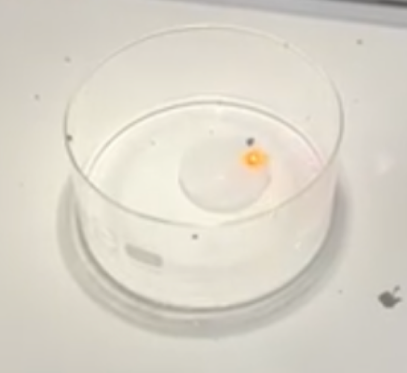
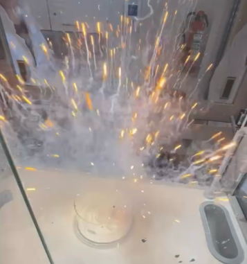
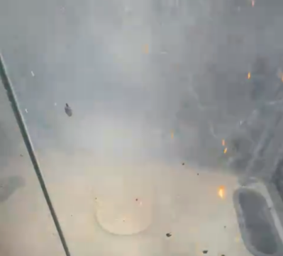
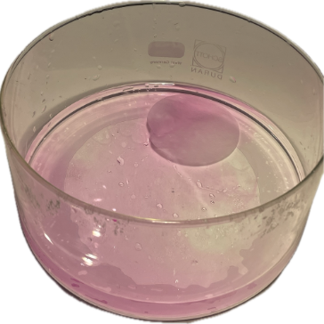

- Glaswanne
- Messer
- Unterlage
- Pinzette
- Papiertuch
- Wasser
- Abzug
Experiment: Pink Panther
Materialien
Chemikalien
- Natriumstücke (in Paraffinöl)
- Phenolphthaleinlösung (Indikator)

Natrium reagiert heftig mit Wasser und bildet dabei hochentzündbare Gase

Natrium verursacht schwere Verätzungen an der Haut und schwere Augenschäden
Schutzbrille, Schutzhandschuhe und Schutzkleidung tragen! Experiment im Abzug durchführen. Sicherheitshinweise der Chemikalien beachten.
Durchführung
- Glaswanne mit Wasser füllen
- Phenolphthaleinlösung hinzugeben
- Glaswanne unter dem Abzug platzieren
- Ein Stück Natrium mit der Pinzette aus dem Glas nehmen und auf der Unterlage (Papiertuch) platzieren.
Unterlage und sonstige Matrialien vollkommen trocken halten! - ein Stück vom elementaren Natrium abschneiden (wenn nötig dabei mit Pinzette festhalten)
- Petroleumöl/Paraffinöl mit dem Papiertuch abtrocknen
- Filterpapier in die Hand nehmen
- Stück Natrium mit der Pinzette nehmen und auf das Filterpapier legen
- sofort den Abzug schließen
- Zu viel Wasser in der Wanne
- Zu kleine Menge Phenolphthaleinlösung
- Zu kleines Stück Natrium
Beobachtung
Das Natrium bewegt sich zischend übers Wasser. Dabei wird es kleiner und formt sich zu einer Kugel, entzündet sich, explodiert, bildet viel Gas (Wasserstoff) und hinterlässt pinke Schlieren auf dem Wasser.

CC BY-SA 4.0" data-source="Eigenes Bild" data-author="Mila B. Weronika J." data-title="Beobachtung 1 Pink Panther">
CC BY-SA 4.0" data-source="Eigenes Bild" data-author="Mila B. Weronika J." data-title="Beobachtung 2 Pink Panther">
CC BY-SA 4.0" data-source="Eigenes Bild" data-author="Mila B. Weronika J." data-title="Beobachtung 3 Pink Panther">
CC BY-SA 4.0" data-source="Eigenes Bild" data-author="Mila B. Weronika J." data-title="Beobachtung 4 Pink Panther">Erklärung
Das Stück Natrium reagiert heftig exotherm mit dem Wasser unter Bildung eines Gases (Wasserstoff). Die Verfärbung des Indikators zu pink zeigt an, dass sich der pH-Wert der Lösung. verändert hat. Die pinke Lösung zeigt an, dass der pH-Wert im basischen Bereich liegt. Das Natrium reagiert folglich mit Wasser zu Natriumhydroxid (=Natronlauge) und Wasserstoff.
\( \ce{Na + H2O -> NaOH + H2} \)Die Energieumsetzung findet in Form von kinetischer Energie statt, wodurch das Natriumstück über das Wasser gleitet. Es formt sich durch die Oberflächenspannung des flüssigen Metalls zu einer Kugel. Das Natrium entzündet sich und explodiert anschließend deswegen, weil sich das Natrium nicht mehr bewegen kann oder das Gas nicht entweichen kann (geschlossenes System im Abzug). Die Entzündungstemperatur des Wasserstoffs kann leicht erreicht werden, da bei der stark exothermen Reaktion viel Energie in Form von Wärme freigesetzt wird.